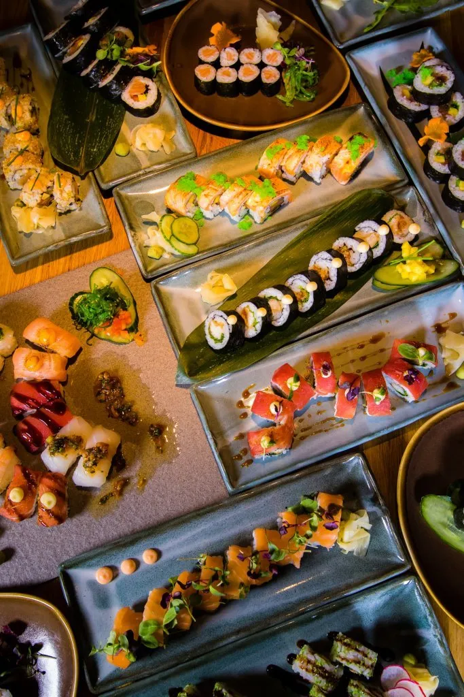
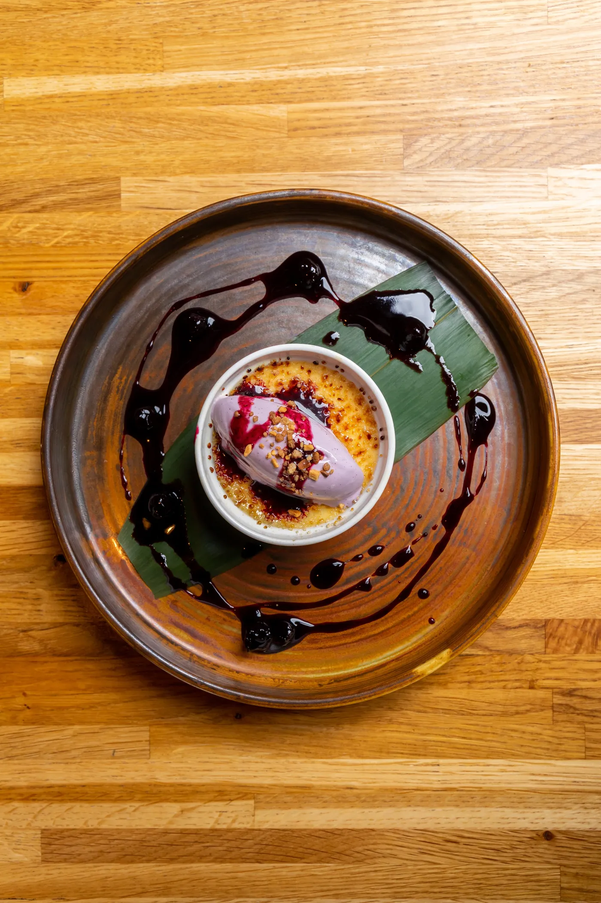

Rub 23 · síðan 2008
Fiskur, kjöt og sushi.
Á okkar hátt.
Á Rub 23 mætast fiskur, kjöt og sushi í eldhúsi sem byggir á eigin kryddblöndum, nákvæmni og óhræddum bragðpörunum.

Heimilisfang
Kaupvangsstræti 6
600 Akureyri
Opið í dag
Sjá opnunartíma
Samband
Leiðin
Opna kort ↗Kryddin okkar
Ellefu blöndur. Einn karakter.
Krydd, fræ og ferskar jurtir móta bragðið áður en hráefnið fer í eldun. Þetta er ein af undirskriftum Rub 23.
01 · Kryddblanda hússinsMagic pepper
Fimm tegundir af pipar, paprika, kóríanderfræ og japönsk leyniblanda.
02Caribbean creole
Þrjár tegundir af chillí, paprika, hvítlaukur og kryddjurtir.
03Moroccan arabic
Kardimommur, fennel og fenugreek úr ferðatöskunni.
04Asian fusion
Chillí, engifer, stjörnuanís, limelauf og fimm krydda blanda.
05Indian
Garam masala, engifer, karrí, kóríander og negull.
06Roasted garlic coriander
Kóríanderfræ, sítróna, ferskur kóríander og ristaður hvítlaukur.
07Citrus rósmarín
Ferskt rósmarín, lime, sítrónubörkur og olía.
08Texas BBQ
Sérlöguð barbecue-sósa með reyktum eikarilmi.
09Garden herb
Ferskar kryddjurtir, hvítlaukur og lime.
10Sweet mango
Mangósulta hússins, papaya og sæt chillí-sósa.
11Soya lemon
Sérlöguð sojasósa Rub 23, limesafi og olía.

Omakase
Leyfðu kokkunum að velja fyrir þig.
Réttirnir eru valdir af kokkunum og bornir fram til að deila. Allir við borðið njóta sömu máltíðar saman.
Bóka borðVeislur og hópar
Matur sem heldur utan um tilefnið.
Rub 23 og Bautinn bjóða saman veisluþjónustu fyrir hópa frá tólf manns. Við hjálpum ykkur að velja rétti sem henta stundinni.
Senda fyrirspurn
Rub 23 · síðan 2008
Smá innsýn.


Bóka borð
Við tökum vel á móti þér.
Bókaðu borð fyrir kvöldið í Dineout. Í hádeginu tökum við á móti gestum án bókunar. Hafðu beint samband ef gestirnir eru fleiri en tíu.
Fleira hjá K6